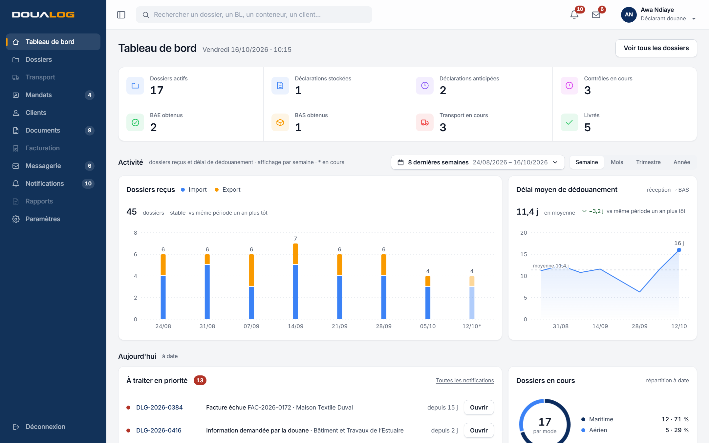
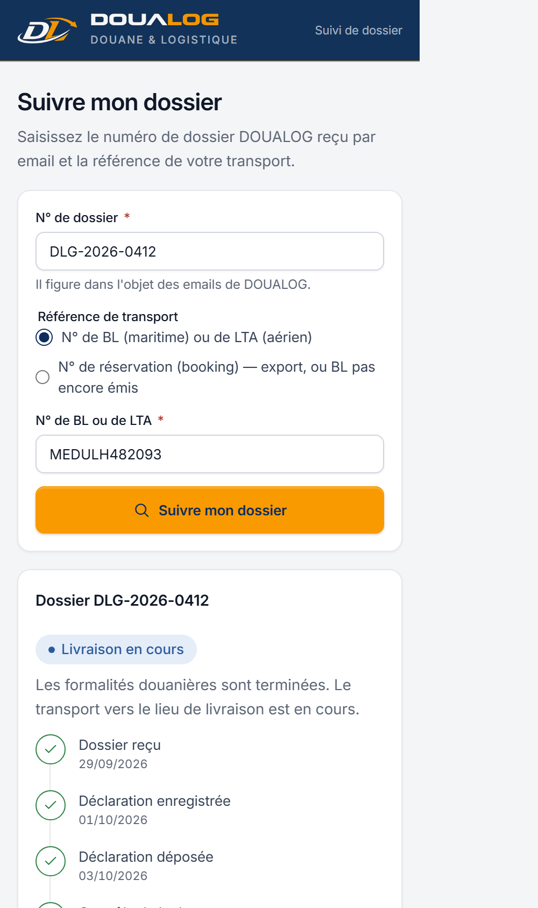
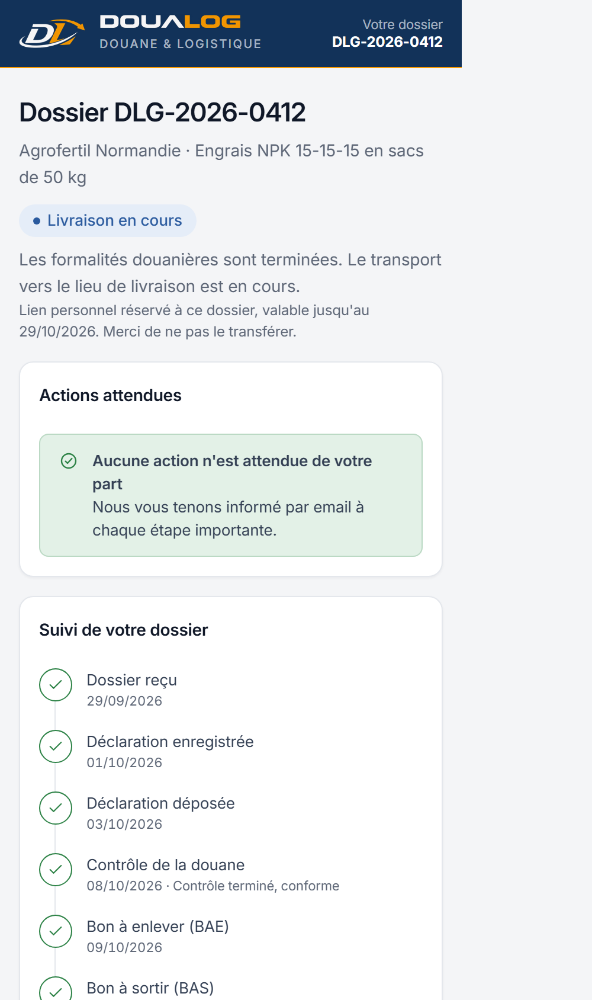
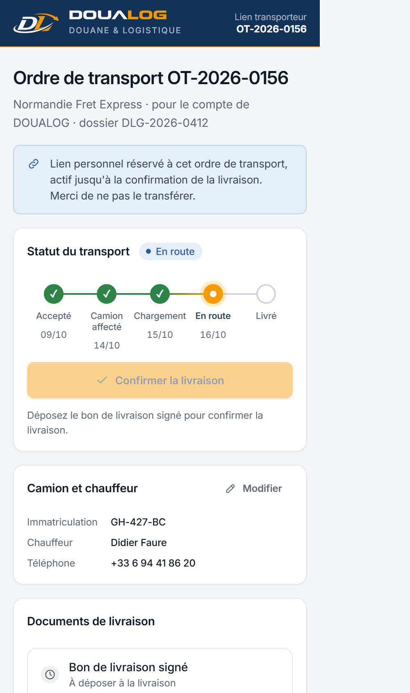

Connecter
Le client, l'équipe, la douane et le transporteur travaillent sur le même dossier, avec le même numéro, le même statut, la même couleur partout.

Charte graphique · version 2.0 · octobre 2026
Connecter•Sécuriser•Livrer
Sommaire
Un dossier de dédouanement traverse beaucoup de mains : le client, le déclarant, la douane, le transporteur, la facturation. DOUALOG les réunit dans un même outil. L'identité dit la même chose : calme, précise, en mouvement.
Le client, l'équipe, la douane et le transporteur travaillent sur le même dossier, avec le même numéro, le même statut, la même couleur partout.
Mandat, pièces obligatoires, codes de confirmation, historique horodaté : rien ne se perd, tout se retrouve.
Du bon à enlever jusqu'au camion, chaque étape est visible. Le client suit son dossier sans créer de compte.
Pourquoi ces choix
La couleur de la confiance et de la rigueur douanière. C'est aussi la nuit du port, quand la marchandise continue d'avancer. Il tient le cadre : menu, en-têtes, emails.
L'arc qui traverse le monogramme : la trajectoire de la marchandise, du quai jusqu'au client. À l'écran, il signale l'action à faire et l'étape en cours, et rien d'autre.
Un déclarant passe huit heures par jour sur l'outil. Inter reste nette en petite taille, ses chiffres s'alignent, et elle ne fatigue pas l'œil.
Des angles arrondis, des ombres légères, des animations de moins d'un quart de seconde : un outil moderne qui ne détourne jamais l'attention des données.
Avant, après
Le même écran de la liste des dossiers, avec l'identité de septembre (v1.0) et celle d'aujourd'hui (v2.0). Faites glisser la poignée.
Le monogramme DL et le nom DOUALOG sont fournis en fichiers : on ne les redessine pas, on ne les recompose pas. La version blanche est la version d'usage sur le bleu nuit (menu de l'application, en-tête des pages client, emails) ; la version couleur s'utilise sur fond clair. Le nom DOUALOG apparaît une seule fois par écran.
Versions
#F4F5F7À éviter
Trois couleurs portent l'identité : le bleu nuit du menu, l'orange du logo et le bleu marine des titres et éléments actifs. Tout le reste est neutre. L'orange est rare, et c'est ce qui le rend lisible. Cliquez sur une couleur pour copier son code.
Identité
Déclinaisons de l'orange
Bouton orange = texte bleu marine. Le blanc sur l'orange n'est pas assez lisible (voir le vérificateur ci-dessous).
Surfaces et texte
Vérifier un contraste
Minimum exigé dans DOUALOG : 4,5:1 pour tout texte courant (niveau AA), 3:1 pour les grands titres et les icônes.
Couleurs des indicateurs
Bleu #3B82F6 · violet #8B5CF6 · magenta #D946EF · vert #22C55E · orange #F99A00 · rouge #EF4444.
Une teinte par indicateur du tableau de bord, en icône sur un carré légèrement teinté, et dans les graphiques. Ces couleurs ne disent pas l'état d'un dossier : pour un statut, on utilise toujours les six teintes de statut (chapitre 07).
Dosage sur un écran
Application : fond de travail, cartes blanches, menu bleu nuit, une touche d'orange.
Pages client : en-tête bleu nuit, ligne orange, contenu clair.
Tableau : blanc, statuts en fonds très légers.
Une seule police : Inter, choisie après comparaison avec Roboto et Geist. Très lisible en petite taille, elle tient la densité d'un écran utilisé huit heures par jour. La hiérarchie se fait par la taille et la graisse, jamais par les majuscules.
Échelle
| Rôle | Taille · graisse | Exemple |
|---|---|---|
| Titre de page | 22 px · 600 · approche −2 % | Tableau de bord |
| Chiffre indicateur | 22 px · 600 · tabulaire | 17 |
| Référence du dossier ouvert | 17 px · 600 · approche −1 % | Dossier DLG-2026-0412 |
| Titre de bloc | 14 px · 600 | Liste des dossiers |
| Corps formulaire | 14 px · 400 | Vérification du poids et du marquage des sacs : conforme au manifeste. |
| Corps application, tableaux | 13 px · 400 · approche −0,6 % | Déclaration stockée, en attente de contrôle. |
| Référence | 13 px · 500 | DLG-2026-0412 |
| Libellé, en-tête de colonne | 12 px · 600 | N° dossier |
| Métadonnée | 12 px · 400 | Reçu le 29/09/2026 · 09:14 |
| Note, axe de graphique | 11 px · 400 | 8 dernières semaines |
--ls-title, --ls-heading).Des angles doux, des ombres courtes et légères, des matières translucides pour ce qui flotte au-dessus du contenu. Plus une surface est haute, plus son ombre est diffuse. Aucun effet ne doit gêner la lecture des données.
Espacements · base 4
--sp-14 px · icône et texte--sp-28 px · éléments d'un composant--sp-312 px · entre cartes--sp-416 px · intérieur de carte--sp-520 px--sp-624 px · marge de page--sp-832 px · entre sections--sp-1248 pxDimensions de l'application
| Menu ouvert / replié | 216 px / 64 px |
| Header | 60 px |
| Ligne de tableau | 40 px |
| Contrôle (bouton, champ) | 36 px · petit 30 px |
| Cible tactile, pages client | 44 px |
| Contenu des pages client | 640 px max |
| Icônes | 14 · 16 · 20 px |
Angles
Profondeur
Header et bandeau du dossier translucides (blanc à 82 %, flou de 14 px) : le contenu défile dessous. Voile de modale légèrement flouté. Avec « moins de transparence » activé sur l'appareil, ces matières deviennent opaques.
Le mouvement explique d'où vient un élément et où il retourne. Il est court (90 à 240 ms), sans rebond, et interrompable : fermer pendant l'ouverture repart de la position affichée. La sortie suit le même chemin que l'entrée, en plus rapide.
--dur-press--dur-fast--dur-base--dur-enter--dur-staggerCourbe des feuilles iOS : départ vif, arrivée douce
Entrée --ease-out = cubic-bezier(.32, .72, 0, 1) · sortie en miroir --ease-in.
Accessibilité : avec « moins d'animations », les distances passent à 0 (fondus seuls) ; avec « contraste renforcé », filets et textes secondaires sont plus marqués.
Une seule famille : grille 24 × 24, trait de 1,8 px, extrémités arrondies, aucun remplissage. Une icône seulement si elle accélère la reconnaissance ; une icône = un sens. Aucun emoji.
Chaque statut de dossier, de transport ou de facture est rattaché à une des six teintes. Le même libellé a la même teinte partout : liste, dossier, pages client. La couleur n'est jamais seule : toujours une pastille et un libellé.
Un dossier, du premier email à la clôture
Correspondance des statuts
| Dossier |
|---|
| Transport |
|---|
| Facture |
|---|
| Colonne Contrôle (texte coloré + date) |
|---|
| Physique · en cours16/10/2026 |
| Documentaire · info manquante13/10/2026 |
| Aucun contrôle |
États du workflow : terminé (vert ✓), anticipé (violet ✓), en cours (orange DOUALOG), contrôle en cours (rouille !), bloquant (rouge !), sans objet (gris –), à venir (cercle vide). Le trait entre deux étapes dégrade de la couleur de l'étape passée vers la suivante.
Les briques de l'application, telles qu'elles fonctionnent dans les maquettes : essayez-les. Le détail technique (classes, variantes, états) est dans le design system des maquettes, output/design-system.html.
Structure de l'application
Menu bleu nuit pleine hauteur, logo blanc en tête. Replié (64 px), il ne garde que les icônes et le monogramme. Header blanc translucide. Entrée active : fond discret et repère orange à gauche. Entrée hors droits du profil : grisée.
Indicateurs du tableau de bord
Bandeau blanc découpé par des filets fins. Un clic ouvre la liste filtrée ; l'indicateur actif porte un trait bleu marine en bas. Cliquez pour essayer.
Boutons
Un seul bouton orange par zone. Appuyez : il s'enfonce dès l'appui. « BAS obtenu » ouvre la modale de confirmation.
Champs de saisie
Libellé au-dessus, jamais en placeholder seul. Erreur sous le champ, en langage clair. Focus orange.
Onglets, filtres et tableau
| N° dossier | Type | Client | Statut | Contrôle | Transport |
|---|---|---|---|---|---|
| DLG-2026-0412 | Import | Agrofertil Normandie | En facturation | Aucun contrôle | En route |
| DLG-2026-0415 | Import | Pièces Auto du Havre | Contrôle physique en cours | Physique · en cours16/10/2026 | — |
| DLG-2026-0416 | Import | Bâtiment et Travaux de l’Estuaire | Info manquante | Documentaire · info manquante13/10/2026 | — |
| DLG-2026-0420 | Import | Éts Moreau & Fils | Déclaration anticipée | — | — |
Lignes de 40 px, en-têtes sur bande gris très clair, en casse normale. Filtre actif plein bleu marine ; les lignes apparaissent en cascade à chaque filtrage. Exceptions marquées par un filet à gauche (rouge : bloquant, rouille : vigilance).
Alertes
Le client et le transporteur n'ont pas de compte : ils reçoivent un email et un lien. Même identité, registre plus simple : en-tête bleu nuit, logo blanc, ligne orange, contenu clair sur 640 px maximum, un seul bouton orange pleine largeur, cibles tactiles de 44 px. Vouvoiement, ton professionnel sobre.
Page lien transporteur
Merci. L'ordre de transport OT-2026-0161 vous est attribué.
Nous avons bien reçu votre dossier
Suivez son avancement à tout moment, sans créer de compte.
Suivre mon dossierEmails : 600 px, styles en ligne (les messageries ne lisent pas les variables CSS), police système avec Inter si installée, carte aux angles de 12 px, bouton #F99A00 à texte bleu marine #0C2C5E, N° de dossier dans un encadré gris très clair. Le slogan apparaît en pied d'email et sur l'écran de connexion, nulle part ailleurs.
Les règles appliquées : les écrans sont des captures des maquettes V1, les objets sont des déclinaisons de la même identité pour les supports de l'entreprise.
Dans l'application

Chez le client et le transporteur



Hors écran
Bonjour Madame Dubois,
Le BAS de votre dossier est obtenu. Le camion est en route.
Tout ce qu'il faut pour appliquer la charte, et la validation qui la rend officielle.
Validation de la charte
Bon pour accord
En validant, vous confirmez que la charte graphique DOUALOG v2.0 devient la référence pour l'application, les pages client, les emails et les supports de l'entreprise.
Charte approuvée